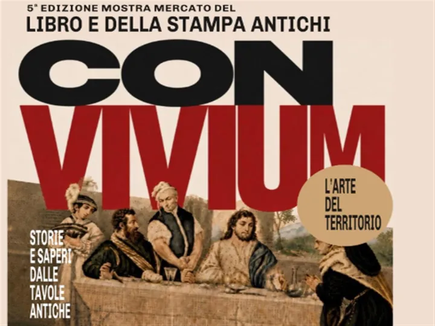

da sab 7 nov a dom 8 nov
Mostra mercato del libro e della stampa antichi
Sabato 7 e domenica 8 novembre 2026 torna nella Sala della Ragione di Asolo la Mostra Mercato del Libro e della Stampa Antichi, giunta alla quinta edizione. Promossa dall’Associazione Culturale Asolo Arte, in collaborazione con l’Associazione Eventi Artistici Treviso, la…
 Indicazioni
Indicazioni
- Costi e prenotazioni
- Costo non indicato · Prenotazione non indicata
- Programma
- Programma da verificare. Apri la fonte ufficiale per orari e possibili aggiornamenti.
- In caso di maltempo
- Nessuna indicazione specifica pubblicata.
- Note
- Acquisito automaticamente dalla fonte.
L’EVENTO
Descrizione completa
Sabato 7 e domenica 8 novembre 2026 torna nella Sala della Ragione di Asolo la Mostra Mercato del Libro e della Stampa Antichi, giunta alla quinta edizione. Promossa dall’Associazione Culturale Asolo Arte, in collaborazione con l’Associazione Eventi Artistici Treviso, la manifestazione propone due giornate dedicate alla scoperta del patrimonio librario e figurativo, con espositori provenienti da diverse regioni italiane.
Il tema di quest’anno, «CONVIVIUM – L’arte del territorio. Storie e saperi dalle tavole antiche», invita a riscoprire il legame fra libri, paesaggio e cultura della tavola. Il convivio diventa il filo conduttore di un percorso attraverso le abitudini, le conoscenze e le tradizioni che hanno accompagnato la vita delle comunità. Ricettari, trattati di agricoltura, opere dedicate alla vite e al vino raccontano come si coltivava, si cucinava e si condivideva il cibo, conservando testimonianze preziose della storia dei territori.
La mostra mercato riunirà librai antiquari, galleristi, collezionisti ed editori specializzati. Libri antichi, manoscritti, incisioni, stampe di pregio, carte geografiche e vedute storiche offriranno al pubblico un itinerario attraverso epoche e linguaggi differenti. I visitatori potranno ammirare e acquistare le opere, incontrare gli espositori e approfondire la storia e le caratteristiche dei materiali presentati. Un appuntamento rivolto ai collezionisti e ai bibliofili, ma anche a chi desidera avvicinarsi per la prima volta al mondo del libro e della grafica antichi.
A caratterizzare questa edizione sarà la straordinaria partecipazione della Biblioteca Internazionale “La Vigna” di Vicenza e ospite d’eccezione sarà il prof. Otello Fabris, studioso e bibliofilo, delegato per l’Italia dell’Associazione Internazionale per gli Studi Folenghiani “Amici di Merlin Cocai”.
L’ingresso è libero.
IL PROGRAMMA
Programma e orari
Appuntamenti raccolti dalle fonti elencate. Dove manca un orario, non è ancora disponibile in questa scheda.
Programma pubblicato
- 2026-11-07 — 2026-11-08 · 09:30:00
INFORMAZIONI UTILI
Prima di partire
- Controllare la fonte prima di partire.
ORGANIZZAZIONE